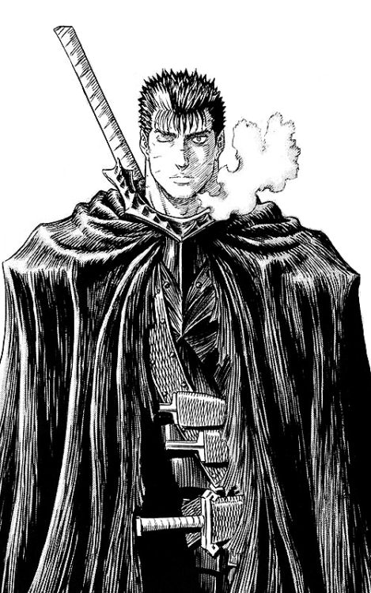

Publicado el 5 de marzo de 2023 por Gadi
La evolución de Guts en la obra Berserk es uno de los aspectos más destacados dentro del manga. Guts comienza como un guerrero solitario y despiadado que se une al grupo de mercenarios liderado por Griffith con el objetivo de obtener poder y riqueza. Sin embargo, a lo largo de la historia, Guts experimenta una profunda transformación personal que lo lleva a replantearse sus objetivos y su forma de vida. En un principio, Guts parece ser un personaje cínico y despiadado, que se preocupa principalmente por sí mismo y no tiene problemas en matar a quien se interponga en su camino. A medida que la historia avanza, sin embargo, Guts comienza a experimentar cambios significativos. En primer lugar, comienza a establecer lazos emocionales con los miembros del grupo de Griffith, especialmente con Casca. Este cambio en su comportamiento es un indicativo de la humanidad y empatía que existe en Guts, aunque en un primer momento no es evidente. Con el tiempo, Guts comienza a tomar más en cuenta las necesidades y los sentimientos de los demás, lo que lo lleva a cuestionarse su rol en la vida. Guts comienza a experimentar una profunda crisis existencial, cuestionando su sentido de la vida y su propósito. A través de diversos encuentros y eventos en la trama, Guts es confrontado con preguntas sobre el destino, la libertad y la moralidad, temas fundamentales en la filosofía existencialista. Estas reflexiones lo llevan a buscar su propio camino, alejado de las convenciones sociales y los valores establecidos. Por último, Guts experimenta una transformación física que lo lleva a enfrentarse a los demonios y los poderes sobrenaturales que habitan en el mundo de Berserk. Este aspecto de su evolución se relaciona con la idea de que la lucha interna que experimenta Guts, a medida que cuestiona y redefine su sentido de la vida, también se manifiesta en el mundo físico. En conclusión, la evolución de Guts en Berserk es una metáfora de la búsqueda humana de la identidad y el propósito en la vida. A través de su historia, se nos muestra la importancia de las relaciones interpersonales, la reflexión personal y la lucha interna como elementos clave en la construcción de un sentido de vida auténtico y satisfactorio. En última instancia, la evolución de Guts es un recordatorio de que, aunque la vida puede ser difícil y dolorosa, siempre hay la posibilidad de encontrar la luz en la oscuridad.
